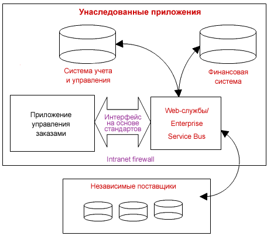

Введение
Сложность - один из ключевых вопросов при разработке программного обеспечения. Повышение уровня
абстракции позволяет снизить сложность и сократить объем сопроводительной документации. Этого можно
добиться путем многократного использования одних и тех же модулей, применения высокоуровневых
инструментов моделирования и стабилизации архитектуры на раннем этапе разработки системы.
|
|
|
Преимущества
|
-
Производительность
-
Снижение сложности.
|
|
Что делать
|
-
Повторно используйте существующие ресурсы
-
Сократите объем создаваемой документации за счет применения инструментов и языков
более высокого уровня
-
Сначала сконцентрируйтесь на стабилизации архитектуры
-
Заложите в архитектуру системы достаточные надежность, качество, простоту и
модульность.
|
|
Чего не делать
|
-
Что происходит при переходе от нечетко сформулированных требований высокого уровня
напрямую к программированию:
-
Поскольку применяется мало абстракций, много решений принимается на уровне
кода, а не на более высоком уровне, что, среди прочих недостатков, заметно
сокращает шансы на повторное использование кода.
-
Неформально собранные требования и другая информация требуют постоянного
пересмотра решений и спецификаций.
-
Недостаточное внимание к архитектуре на начальном этапе приводит к большому
количеству переделок на заключительных стадиях.
|
|
Обсуждение
Один из основных камней преткновения при разработке программного обеспечения - его сложность. Мы знаем, что сокращение
сложности оказывает колоссальное влияние на производительность труда. Чем выше уровень абстракции, на котором ведется
работа, тем ниже сложность и проще взаимодействие.
Один из эффективных приемов сокращения сложности заключается в многократном использовании существующих
ресурсов - компонентов, имеющихся в распоряжении систем, бизнес-процессов, шаблонов и программного обеспечения с
открытым кодом. За последнее десятилетие было два замечательных примера многократного использования, оказавших
значительное влияние на всю отрасль разработки программного обеспечения:
-
Многократное использование программного обеспечения среднего уровня: базы данных, Web-серверы и порталы
-
Программное обеспечение с открытым кодом, из которого можно брать различные малые и большие компоненты.
Большим потенциалом для многократного использования в будущем обладают Web-службы, поскольку они представляют собой
очень удобный инструмент реализации стандартных функций на различных платформах с минимальной зависимостью между
потребителями и поставщиками служб. Эта особенность значительно упрощает компоновку продуктов из различных готовых
Web-служб. Кроме того, повторное использование упрощается за счет применения открытых стандартов, включая RAS, UDDI,
SOAP, WSDL, XML и UML.

Многократное использование ресурсов в архитектурах на основе служб.
Одна из сложностей с повторным использованием ресурсов заключается в том, компоненты должны знать о существовании
друг друга в момент разработки. В архитектурах на основе служб эта сложность преодолевается за счет так называемых
слабых связей: пользователь службы может осуществлять динамический поиск ее поставщиков. Таким образом
обеспечивается возможность упаковки компонентов и существующих систем в службы, что позволяет другим компонентам и
приложениям получать динамический доступ к этим службам через стандартные интерфейсы, не зависящие от платформы и
технологии реализации.
Другой подход к сокращению сложности и повышению эффективности взаимодействия заключается в применении
инструментов, окружений и языков более высокого уровня:
-
Стандартные языки, например язык UML (Unified Modeling Language), и языки быстрой разработки
приложений, например EGL, снабжены высокоуровневыми конструктивными элементами, включая бизнес-процессы и
компоненты служб. Эти конструктивные элементы упрощают организацию взаимодействия на высоком уровне со
скрытием ненужных деталей.
-
Инструменты разработки и конструирования применяются для автоматизации преобразования
высокоуровневых конструктивных элементов в рабочий код:
-
-
В состав этих инструментов входят мастеры автоматизации проектирования, конструирования и
тестирования приложений, автоматически генерирующие необходимый код
-
Эти инструменты значительно упрощают интеграцию и тестирование приложений в интегрированных средах
разработки, компоновки и тестирования.
-
Инструменты управления портфолио упрощают организацию финансового и иного управления группой
проектов как единым проектом.
В целом высокоуровневые инструменты снабжены графическим интерфейсом ввода ключевой информации, что очень удобно и
наглядно. Преимущества визуального моделирования подробно обсуждаются в разделе Вспомогательные материалы: визуальное моделирование.
Третий подход к управлению сложностью заключается в том, чтобы сфокусироваться на архитектуре для описания
бизнеса или разработки системы или приложения. При разработке программного обеспечения желательно как можно раньше
спроектировать, разработать и протестировать архитектуру. Это значит, что на начальных стадиях проекта ставятся
следующие задачи:
-
Определение высокоуровневых конструктивных элементов и важнейших компонентов, их сферы задач и интерфейсов.
-
Проектирование и реализация архитектурных механизмов: готовых решений общих задач, например организации
постоянного хранения объектов и сбора мусора.
Разработка адекватной архитектуры на раннем этапе равносильна созданию скелета системы, значительно снижающего
сложность расширения проекта и добавления новых исполнителей, компонентов, возможностей и кода. Кроме того, при
создании архитектуры можно выяснить, какие компоненты придется разрабатывать с нуля и для каких можно воспользоваться
готовыми решениями.
|